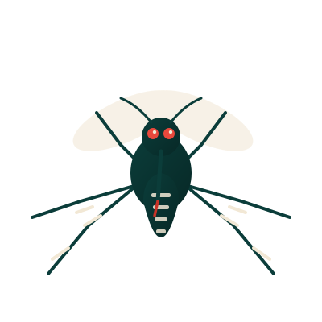
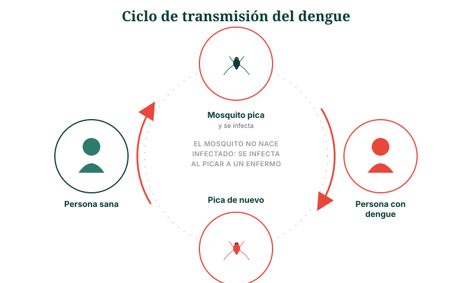

Proyecto académico · Informática Médica
Dengue: la enfermedad que se previene en tu propio patio.
Un sitio informativo sobre transmisión, signos de alarma y manejo clínico del dengue, basado en Normas Oficiales Mexicanas, guías de práctica clínica y literatura científica indexada en PubMed.

Qué encontrarás aquí
Un sitio, dos públicos, una misma meta
El dengue se combate desde dos frentes: lo que cada persona puede hacer en casa, y lo que el personal de salud debe identificar a tiempo. Por eso este sitio se divide en dos rutas de lectura.
Público general
Síntomas, signos de alarma, prevención en casa y cuándo acudir a un servicio de salud. Lenguaje claro, sin tecnicismos.
Entrar a esta sección →Personal de salud
Clasificación clínica OMS/OPS, criterios de hospitalización, manejo de líquidos y marco normativo (NOM-032-SSA2-2014).
Entrar a esta sección →Contexto epidemiológico en México
El dengue en cifras
Fuentes: Secretaría de Salud / CENAPRECE, Panorama Epidemiológico de Dengue 2025; CDC, Características clínicas del dengue. Ver referencias completas.

Recursos del sitio
Explora el resto del contenido
El dengue de un vistazo
Agente causal, transmisión, clasificación, prevención y vigilancia en un solo esquema.
Infografía y videoMultimedia
Infografía descargable y video explicativo elaborado en Canva.
FormularioCuestionario de conocimientos
Evalúa qué tanto sabes sobre prevención y signos de alarma del dengue.
BibliografíaReferencias científicas
NOM, guías de práctica clínica, artículos PubMed/NCBI y fuentes de imágenes.